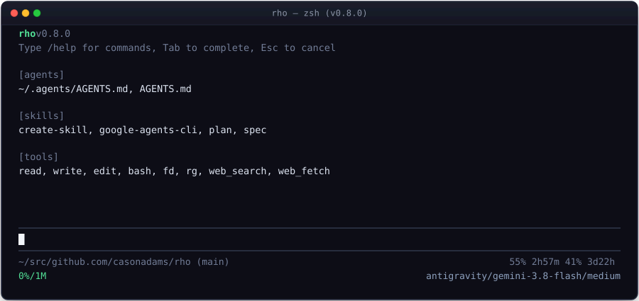
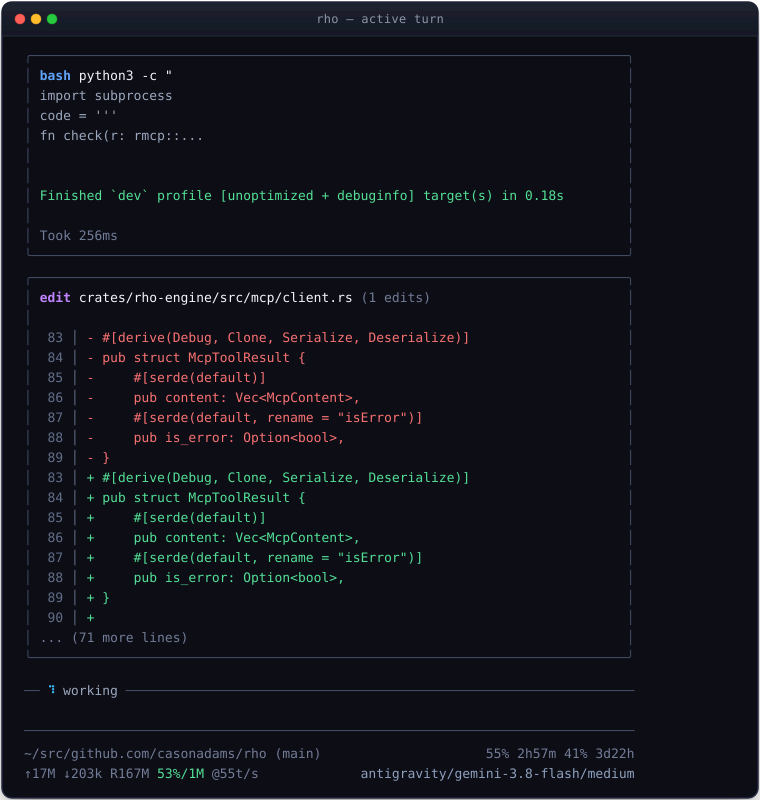
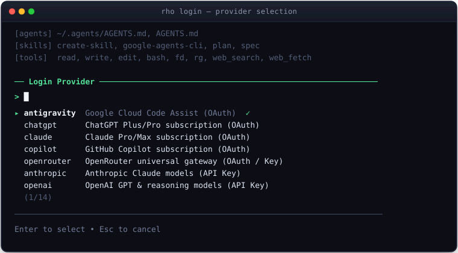
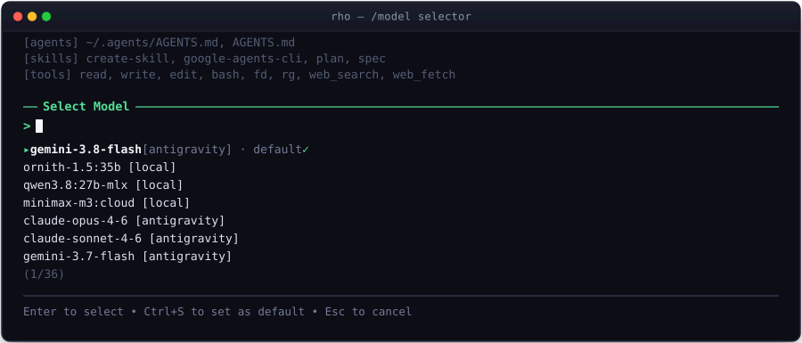

Getting Started with rho
rho is a fast, clean, local, private, and secure coding agent CLI built in Rust. It delivers native performance, strict in-process safety boundaries, session persistence, standard MCP tool servers, and lightweight lifecycle hooks.

The pirho Connection: For those who play with fire
In Greek, combining π (pi) and ρ (rho) spells πυρ (pyr) — fire.
rho was built with deep appreciation for the minimalist terminal ergonomics of pi.dev,
forging that same clean spirit into bare-metal Rust. Together, π + ρ makes pirho: designed for developers who love playing with fire, moving at blazing native speed, and keeping zero runtime bloat between them and their code.
- Aligned ergonomics: Identical thinking levels, slash commands (
/thinking,/skill:<name>,/new), and positional prompts. - Native Rust speed: Compiled binary with instant startup, zero node/python runtime prerequisites, and in-process tools.
- Safe fire handling: Fail-closed lifecycle hooks, process group isolation, and direct provider connections.
Installation
cargo install rhobrew install casonadams/tap/rhogh release download -R casonadams/rhoCLI Commands & Options
rho provides a focused set of subcommands and flags for agent execution, MCP tool management, and configuration:
# Start interactive multiline REPL
rho
# Execute a one-shot prompt
rho -p "Find and fix memory leaks in parser"
# Continue the last session in the current directory
rho -c
# Interactively browse and select from previous sessions to resume
rho -r
# Resume a specific session by ID (including budget checkpoint)
rho --resume <SESSION_ID>
# Export session to HTML or Markdown
rho --export session.html
# Authenticate an AI provider (OAuth subscription or API key verification)
rho login claude
rho login chatgpt
rho logout anthropic
# List live provider models and context windows
rho models
# Inspect or edit configuration
rho config
rho config model anthropic/claude-3-7-sonnet
# Model Context Protocol (MCP)
rho mcp list
rho mcp test filesystem
rho mcp add db "https://mcp.db.example.com/mcp"
rho mcp remove db
# Self-update to latest release
rho update
8 Built-in Native Tools
rho includes 8 fast, native tools designed specifically for coding agents:
read: Safe file inspection with line numbers, chunk offsets, limit bounds, and image sniffing.write: Creates or overwrites files with automatic missing directory creation.edit: Targeted, exact text replacements verifying strict single-match semantics.bash: Process group cleanup, timeout watchdog, and binary output sanitization.fd: Fast gitignore-aware workspace file discovery with smart-case regex matching.rg: Content search, gitignore-aware, skipping binaries and bounding output lines.web_search: Live web searching with domain filters and structured summaries.web_fetch: Clean extraction of markdown, plain text, HTML, CSV, feeds, or images from URLs. Includes specialized extractors for GitHub, YouTube transcripts, and Gemini multimodal analysis for visual charts, diagrams, and scanned PDFs.
Providers, Authentication & Rolling Quotas
rho supports both API keys and subscription OAuth. Run rho login <provider> to authenticate:
- Subscription OAuth:
chatgpt,copilot,antigravity,claude,openrouter. - API Key Providers:
anthropic,openai,deepseek,gemini,groq,xai,mistral,cohere,ollama-cloud. - Local Models:
local(runs Ollama locally viaOLLAMA_HOST). - Live Rolling Quotas: Interactive footer displays 5-hour and weekly remaining cooldowns for Antigravity and ChatGPT (e.g.
95% 4h23m 89% 3d21h) and monthly quota for Ollama Cloud.

Configure defaults globally in ~/.config/rho/config.toml or per-project in .rho/config.toml:
# Role-based model configuration and thinking level
thinking_level = "high"
[models]
default = "anthropic/claude-3-7-sonnet"
guard = "local/qwen2.5-coder:7b"
# Execution limits & context window
max_turns = 1000
context_window_messages = 24
compaction_max_bytes = 8192
# Custom OpenAI-compatible endpoints
[providers.my-local-endpoint]
base_url = "http://127.0.0.1:8000/v1"
key_env = "LOCAL_API_KEY"
# UI block framing, output toggles, and border colors (persisted automatically via /settings)
[ui]
block_style = "border" # "border" (outline, default) or "solid" (fill)
agent_block_output = false # Box assistant responses in bordered frames
hide_thinking = false # Hide thinking transcript blocks by default
tools_expanded = false # Expand tool output cards by default
cursor = "hardware" # "hardware" (default, native cursor) or "software" (block)
user_border = "blue" # User prompt blocks
agent_border = "gray" # Agent / sub-agent blocks
tool_border = "gray" # Tool / command cards
bash_success_border = "gray" # Successful bash commands
bash_error_border = "red" # Failed bash commands
# Web tools and search provider configuration (persisted automatically via /settings -> Tools & Permissions)
[tools.web.search]
enabled = true # Enable or disable built-in web_search
default = "brave" # "brave", "duckduckgo", "yahoo", "firecrawl", "exa", or "gemini"
fallback = ["duckduckgo", "yahoo"] # Fallback engines attempted only on failure/empty
[tools.web.fetch]
enabled = true # Enable or disable built-in web_fetch
multimodal = true # Enable or disable Gemini multimodal analysis fallback
[mcp]
enabled = true # Enable or disable MCP subsystem
[permission]
enabled = true # Enable or disable mutation guardrailsSpecialized Web Fetch Extractors
When fetching URLs, web_fetch automatically intercepts recognized GitHub and YouTube resources to deliver clean, token-efficient Markdown:
- GitHub (
github.com): Formats issues, pull requests (with unified diffs), commits, raw file blobs, and directory trees directly via REST APIs and raw endpoints without HTML chrome. SetGITHUB_TOKENorGH_TOKENfor authenticated API access (5,000 req/hr). - YouTube (
youtube.com,youtu.be): Extracts video details (title, channel, duration, views) and timed-text closed captions formatted into clean dialogue transcripts with timestamps ([MM:SS] text). - Multimodal Analysis & PDF Fallback: Analyzes images, charts, and diagrams (PNG, JPEG, WebP, SVG) via Gemini 2.5 Flash into structured Markdown and tables. Automatically falls back to Gemini OCR when native extraction of scanned or complex PDFs fails or yields low confidence. Set
GEMINI_API_KEYorGOOGLE_API_KEYto enable.
Pass format = "html" to bypass specialized extractors and retrieve raw HTML.
Safety Guardrails & Modal Controls
rho features an in-process safety and permission gatekeeper that evaluates tool executions and shell commands before they run. Non-mutating inspections run automatically, while potentially hazardous operations are presented in an interactive confirmation modal:
- [y] Allow: Authorize this specific operation for a single run.
- [e] Edit: Inspect and modify command arguments interactively in a multiline editor before execution.
- [a] Always: Persist an allow rule (with wildcard pattern support) to
.rho/permission.toml(project) or~/.config/rho/permission.toml(global). - [n] Deny: Block execution and submit custom feedback to the agent so it can self-correct its plan.
Automated Guard Model Classification
To eliminate confirmation fatigue while maintaining strict safety, rho can delegate unclassified shell command evaluation to a dedicated, low-latency Guard Model.
- Frictionless Safe Execution: Benign developer tasks—running builds, tests, typecheckers, linters, local git inspections, and read-only diagnostics—are classified as safe (
{"safe": true}) and execute immediately without manual prompts. - Targeted Risk Interception: Hazardous operations—remote git pushes, remote branch deletions, cluster/cloud infrastructure mutations, privilege escalation, credential access, or mass deletions—are flagged (
{"safe": false}) and pause for confirmation with the model's security rationale. - Fail-Safe Closed Architecture: If the guard model times out (10s), is offline, encounters an error, or returns unparseable text,
rhofails closed and falls back to manual human confirmation (or denial in headless mode). Commands never slip through silently on error.
Recommended Local Model: qwen2.5-coder:7b
For fast, offline command inspection without cloud API costs or latency, ollama/qwen2.5-coder:7b is strongly recommended for the guard role:
- Domain Comprehension: Pretrained extensively on code, shell scripts, CLI flags, and DevOps tools (
git,kubectl,terraform,docker, cloud CLIs, database clients), accurately discriminating benign dev tasks from destructive commands. - Low Latency & Small Footprint: At ~4.7 GB quantized (Q4_K_M), it fits easily into Apple Silicon unified memory or consumer GPUs, providing sub-second classification without perceptible CLI pauses.
- Reliable Structured JSON: Runs deterministically at
temperature: 0.0with non-thinking execution (thinking_level: None), consistently producing clean JSON schemas. - Air-Gapped Privacy: Shell commands, repository paths, and sensitive CLI arguments remain 100% on-device and are never transmitted to cloud endpoints.
- Offline Resilience: Functions seamlessly during network disruptions, air-gapped environments, or offline travel.
# 1. Pull the model locally with Ollama
ollama pull qwen2.5-coder:7b
# 2. Configure guard model role in rho
rho config models.guard ollama/qwen2.5-coder:7b
# Or disable guard model evaluation (reverts to baseline prompt)
rho config models.guard noneDeclarative Rules (permission.toml)
Rules can be explicitly authored in .rho/permission.toml (project) or ~/.config/rho/permission.toml (global). Explicit rules take priority over the guard model:
[permission.bash]
"cargo test *" = "allow"
"npm run build" = "allow"
"git push --force*" = { action = "deny", reason = "Force-pushing is strictly prohibited" }
"rm -rf *" = { action = "deny", reason = "Destructive deletion blocked by project policy" }
[permission.path]
"*.env*" = { action = "deny", reason = "Do not read secret environment files" }Use rho --no-permission to bypass permission modals for headless non-interactive CI environments.
Privacy & Zero Telemetry
rho collects nothing. There is zero telemetry, zero background tracking, zero analytics, and zero phone-home pings built into the binary.
- Zero Telemetry & Analytics: rho does not include any telemetry frameworks, crash reporters (such as Sentry), tracking pixels, or usage analytics. It never records, collects, or transmits your command history, tool invocations, prompts, or error traces to rho developers or third parties.
- Direct Provider Communication: Network requests are made strictly and directly to the model endpoints you configure (e.g. Anthropic, OpenAI, Google Gemini, local Ollama, or custom OpenAI-compatible endpoints). There are no intermediary proxy servers, hosted cloud backends, or data collection relays.
- Local-Only Storage: Your configuration files, API keys, session transcripts, branch trees, and context caches are stored strictly on your local disk in standard user config and data directories (
~/.config/rho,~/.local/share/rho, and local workspace.rho/). - Explicit Tool Networking: Network access by tools is bounded and explicit—only when you or the agent run web tools (
web_search,web_fetch) or bash commands that perform network requests. Mutating and network-accessing tools can be audited and gated via Safety Guardrails. - Open Source & Auditable: The entire rho codebase is open source under MIT / Apache-2.0. You can inspect the source code and dependencies to verify that no tracking or telemetry code exists.
Keyboard Shortcuts & Commands
| Shortcut | Context | Action |
|---|---|---|
| Escape | Any | Cancel running turn, abort active tool execution, or dismiss modal popup |
| Ctrl+C | Editor / Modal | Clear draft input or search query (never interrupts turns or exits) |
| Ctrl+D | Editor | Exit session when editor is empty |
| Ctrl+L | Editor | Open interactive provider and model selector modal (fuzzy search) |
| Shift+Tab | Editor | Cycle thinking effort (off → minimal → low → medium → high → xhigh → max) |
| Ctrl+O | Editor | Open interactive session turn history DAG tree viewer |
| Ctrl+S | Selector Modals | Save currently selected model or thinking level as default |
| Enter | Agent running | Queue immediate steering message to execute after active tool |
| Alt+Enter | Any | Enqueue follow-up prompt to FIFO message queue (or newline) |
Slash Commands
Instant in-session commands typed directly into the multiline editor:
| Command | Description |
|---|---|
/help |
Open interactive command reference and shortcut modal |
/model |
Open interactive model and provider switcher modal (Ctrl+L) |
/thinking |
Set reasoning effort level (Shift+Tab) |
/settings |
Open interactive runtime settings modal (block style, framing, model, guard model, thinking, tools & permissions) |
/resume |
Interactive session selector to resume historical conversations |
/rewind |
Rewind conversation history to an earlier checkpoint turn |
/mcp |
Open the interactive Model Context Protocol modal and toggle external tool servers |
/compact |
Manually trigger context compaction with an optional focus directive (e.g. /compact "focus on tests") |
/tree |
View session turn DAG tree and branch navigation (Ctrl+O) |
/collab |
Start P2P live pairing session or manage active collaborators (/collab [start|stop|link|peers|kick|rotate]) |
/exit |
Exit the interactive session cleanly (Ctrl+D) |

Collab: Zero-Infrastructure P2P Live Pairing
rho includes zero-infrastructure, end-to-end encrypted terminal-to-terminal collaboration powered by Iroh. Pair with teammates or secondary devices directly from the terminal without central servers, cloud accounts, or third-party relays.
/collabThe host generates ephemeral Ed25519 node identities and cryptographic capability links:
- Co-Pilot (Full Capability): Interactive pairing with prompt submissions, steering, Esc turn interrupts, and shared tool confirmations.
- Spectator (View-Only): One-way derived key (HKDF-SHA256) allowing guests to follow thoughts, streaming tokens, and diffs without mutation capabilities.
rho join "rho://<node_id>?relay=<relay_url>#<secret>"
In interactive terminals, rho join launches directly into the full-screen terminal interface mirroring the host's layout:
- Interactive TUI & History Hydration: Mounts on an alternate screen with live token streaming, styled tool cards, thinking toggles, and instant transcript hydration from the host's session history (falling back to sequential stdout for non-TTY pipelines).
- Co-Pilot Input: Full prompt bar editing with cursor navigation, multiline support, Enter submissions, Esc turn aborts, and Ctrl+C draft clearing.
- Spectator Mode: Locked prompt bar indicating
[View Only - Read Mode]with quick quit keys (q, Esc, Ctrl+C). - Shared Tool Approvals: If a command requires authorization, the confirmation modal appears simultaneously on both host and co-pilot screens. Either peer can approve (y) or deny (n) to continue execution.
- Peer Attribution & Prompt Synchronization: Machine hostnames are securely exchanged during handshake. Submitting a prompt renders formatted user prompt cards on all screens simultaneously, with author attribution notices displayed on the host.
- Live Footer Metrics & Activity: The guest footer continuously mirrors the active model, provider, token counts, velocity, context percent, and quota, transitioning seamlessly between working and idle states with turn execution.
Headless & IDE RPC Server Mode
For editor extensions (VS Code, Neovim, Zed) and headless automation harnesses, rho provides a fully concurrent, non-blocking JSON-lines RPC server over standard I/O:
rho --mode rpcUnlike synchronous wrappers, rho's RPC loop processes client commands concurrently while turns run. Clients can abort running tasks, steer execution at tool seams, resolve interactive permission prompts, and navigate conversation tree DAGs without blocking stdout.
RPC Commands Reference
| Command | Parameters | Description |
|---|---|---|
prompt |
{ "message": "..." } |
Start an agent turn asynchronously. Emits streaming text, reasoning chunks, and tool events. |
steer |
{ "message": "..." } |
Inject a steering prompt delivered immediately after the active tool finishes. |
abort |
{} |
Interrupt active model generation or abort executing tool processes immediately. |
tool_response |
{ "approval_id": "...", "decision": "allow" | "deny" | "edit: <cmd>" | "always" } |
Resolve a pending permission prompt emitted by tool_approval_request. |
get_state |
{} |
Query active session ID, model, provider, thinking level, and status (idle, busy, waiting_approval). |
get_tree |
{} |
Retrieve the complete conversation history DAG, checkpoints, active leaf ID, and entry previews. |
switch_branch |
{ "node_id": "..." } |
Rewind or branch the conversation DAG to a previous turn or checkpoint. |
set_node_label |
{ "node_id": "...", "label": "..." } |
Assign or clear a human-readable bookmark label on a tree node. |
list_sessions |
{} |
Enumerate saved session files, turn counts, last modified timestamps, and titles. |
resume_session |
{ "session_id": "..." } |
Switch the active engine to another saved session ID. |
fork_session |
{ "node_id": "..." } |
Fork the active branch or checkpoint into an isolated new session file. |
set_model |
{ "model": "<provider>/<model>" } |
Hot-swap the active inference model at runtime. |
set_thinking |
{ "level": "off" | "minimal" | "low" | "medium" | "high" | "xhigh" | "max" } |
Dynamically adjust reasoning effort for supported reasoning models. |
compact |
{ "instructions": "..." } |
Trigger manual context compaction, optionally passing custom focus instructions. |
exit |
{} |
Cleanly terminate active tasks and shut down the daemon. |
Interactive Tool Approval Flow
When a tool executes a mutating command requiring user consent, rho emits a tool_approval_request event and transitions to status: "waiting_approval":
{"type":"tool_approval_request","approval_id":"appr-b618","tool":"bash","arguments":{"command":"cargo check"},"description":"Run cargo check"}
{"type":"status_changed","status":"waiting_approval"}
The client displays a native UI modal and responds with tool_response:
{"type":"tool_response","approval_id":"appr-b618","decision":"allow"}Dynamic Context Compaction & Token Budgeting
Long-running coding sessions inevitably encounter context window exhaustion. rho incorporates an adaptive, resilient compaction engine designed to preserve critical repository findings while reclaiming token capacity:
- Adaptive Context Threshold: Auto-compaction monitors token pressure against the active model's real context window, automatically scaling reserve budgets across both small local models (8k–32k) and massive cloud windows (200k–1M+).
- Atomic Split-Turn Preservation: Cut points never bisect tool calls from their corresponding tool results, preserving protocol validity for Anthropic and OpenAI schemas.
- Cumulative File Tracking: Across multiple compactions, rho records all modified and inspected workspace files in a durable
<file-operations>XML ledger so file awareness is never lost. - Resilient Deterministic Fallback: If upstream provider network timeouts or rate limits interrupt an LLM summarization call, rho automatically falls back to an offline deterministic fact extractor that constructs a structured summary node without dropping session state.
- Bounded Summary Enforcement: Compaction summaries are strictly clamped to
compaction_max_bytes(default 8,192 bytes), preventing runaway summarizer recursion.
The rho Lifecycle Hooks Subsystem
Lifecycle hooks in rho are lightweight, one-shot executable scripts in .agents/hooks/. When events occur, rho pipes event details as single-line JSON to the script's stdin and reads the decision JSON from stdout.
Hook Events
| Event File | Payload (stdin) | Description |
|---|---|---|
on_tool_call |
{ event, tool_name, args, turn, session_id } |
Intercept tool calls before execution. Can allow, stop, skip, rewrite arguments, or prompt the user. |
on_tool_result |
{ event, tool_name, args, output, is_error } |
Inspect or transform tool output after execution. |
on_invalid_tool_call |
{ event, tool_name, args, available_tools } |
Intercept hallucinated or misspelled tools to retry or halt. |
on_completion_call |
{ event, turn, prompt } |
Audit prompt before LLM provider completion. |
turn_start |
{ event, prompt, turn, session_id } |
Notifies turn initiation with initial user prompt. |
turn_end |
{ event, status, tool_calls_count, turn, session_id } |
Notifies turn completion. |
Example: Blocking Destructive Commands
#!/bin/sh
read -r EVENT
# Intercept dangerous commands
if echo "$EVENT" | grep -Eq 'rm -rf|git reset --hard'; then
echo '{"action":"stop","reason":"Destructive command blocked by hook"}'
fiExample: RTK Token Optimization
Use RTK (Rust Token Killer) to automatically filter and compress verbose CLI output (saving 50–90% on context tokens). See examples/hooks/rtk-rewrite.py for the ready-to-use Python recipe.
Configuring Model Context Protocol (MCP) Servers
MCP servers are tool providers configured via standard JSON in ~/.config/mcp/mcp.json or ~/.agents/mcp.json (global) or .mcp.json (local workspace root). rho supports both local stdio child processes (with lazy on-demand startup and automatic 10-minute idle process reaping) and remote streamable-http (with OAuth 2.1 authentication and SSE streaming). All exposed tools are automatically namespaced:
# Inspect, test, and manage MCP servers
rho mcp list
rho mcp test filesystem
rho mcp login remote-jira
rho mcp add db "https://mcp.db.example.com/mcp"
# In the interactive REPL:
/mcp{
"mcpServers": {
"filesystem": {
"command": "npx",
"args": ["-y", "@modelcontextprotocol/server-filesystem", "/Users/username/Desktop"]
},
"github": {
"command": "npx",
"args": ["-y", "@modelcontextprotocol/server-github"],
"env": { "GITHUB_TOKEN": "${GITHUB_TOKEN}" }
}
}
}
When configured MCP servers expose more tools than the deferral threshold (defer_threshold, default 4), rho automatically defers tool schemas behind tool_search to minimize prompt token overhead. The model searches on-demand and dynamically activates matching tools with full schemas for subsequent turns, or can optionally specify execute to run matching tools in the same turn without extra latency.